Ремонт мебели в Самаре и области
Перетяжка и ремонт мебели в Самаре с расчётом стоимости по фото
Обновим диван, кресло, стулья или кухонный уголок без покупки новой мебели. Подберём ткань под интерьер, восстановим наполнитель и вернём мебели аккуратный внешний вид.
- Более 10 лет опыта
- Большой выбор тканей
- Гарантия на работу
Предварительно оценим стоимость по фото — без выезда мастера


Фото → оценкаОтветим в мессенджере
Не обязательно покупать новую
Диван протёрся, просел или перестал подходить под интерьер?
В большинстве случаев мебель можно восстановить: заменить обивку, обновить поролон, отремонтировать каркас или механизм.
Облезла экокожа
Снимем старое покрытие и подберём новый материал под нагрузку.
Пятна и потёртости
Заменим обивку полностью или только на изношенных деталях.
Просело сиденье
Обновим поролон, пружины и вернём мебели удобную форму.
Порвалась ткань
Аккуратно перетянем повреждённые части или весь предмет.
Сломался механизм
Оценим механизм раскладывания и предложим ремонт.
Вид больше не нравится
Подберём цвет и фактуру, которые подходят к интерьеру.
Нужно обновить комплект в одном стиле
Подберём общий материал для дивана, кресел, стульев или мебели в заведении.
Отправьте фото — подскажем, что выгоднееРемонт отдельной части или полная перетяжка.
Рассчитать по фото
От одного стула до комплекта
Восстановим именно то, что износилось
Частичная замена, полная перетяжка, ремонт наполнителя, каркаса и механизмов.
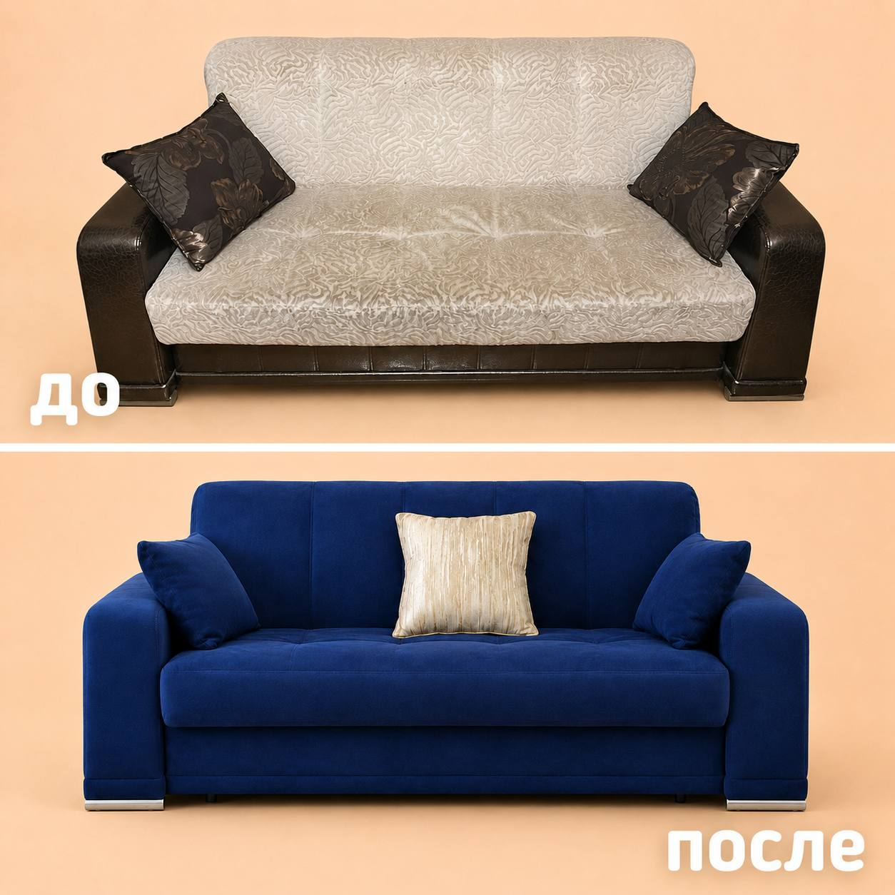
Перетяжка диванов
Полная или частичная замена обивки, восстановление сидений, спинок и подлокотников.
от 8 000 ₽Рассчитать

Ремонт диванов
Ремонт каркаса, механизмов и пружин, замена наполнителя и восстановление формы.
от 3 000 ₽Рассчитать

Замена обивки дивана
Если диван удобный, но потерял внешний вид — обновим обивку под интерьер.
от 5 000 ₽Рассчитать
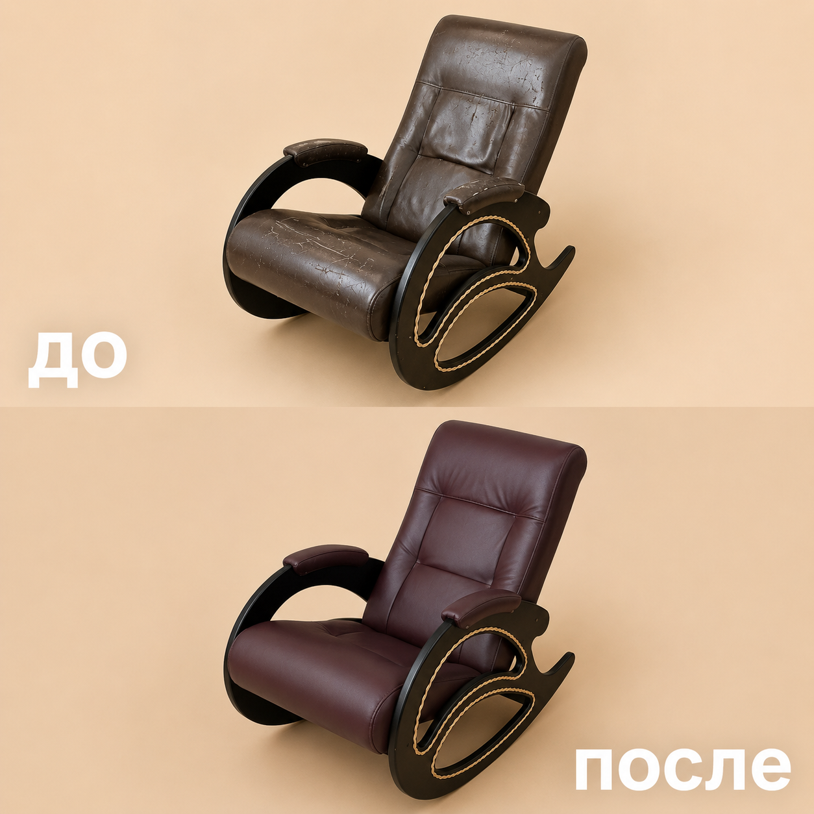
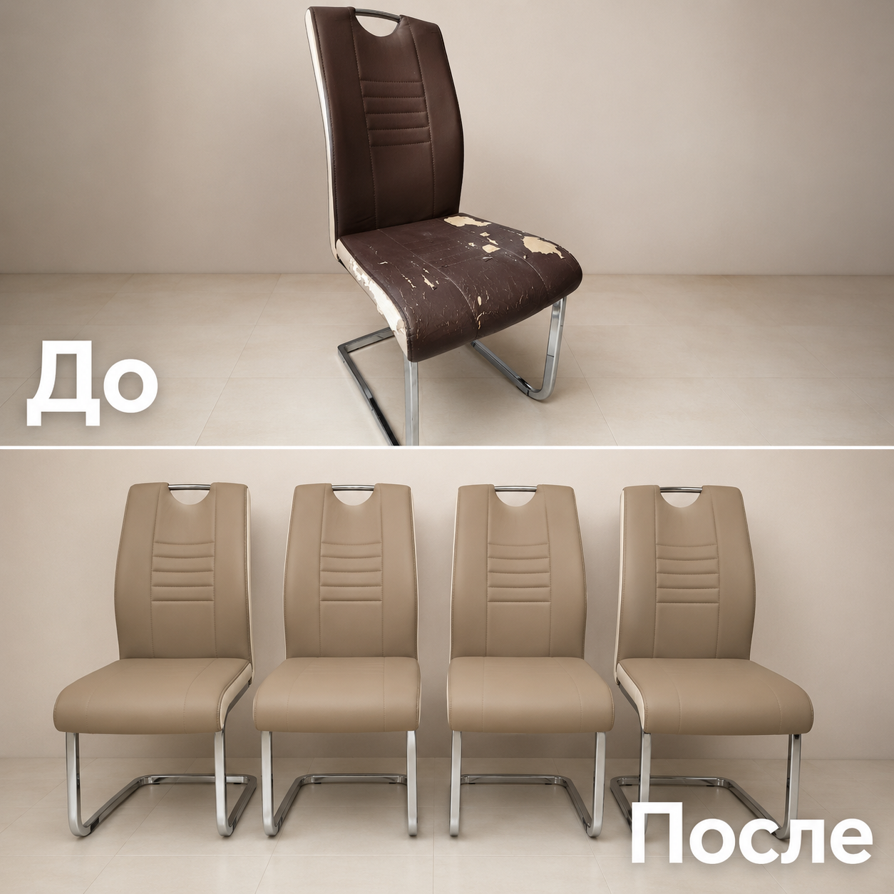
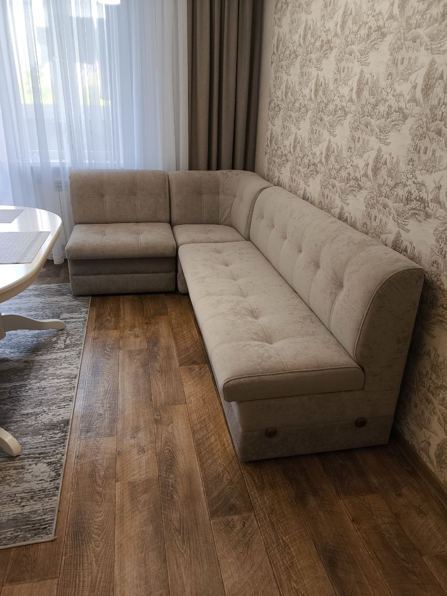
Кухонные уголки
Практичные ткани для кухни, которые легко чистятся и подходят на каждый день.
от 7 000 ₽Рассчитать
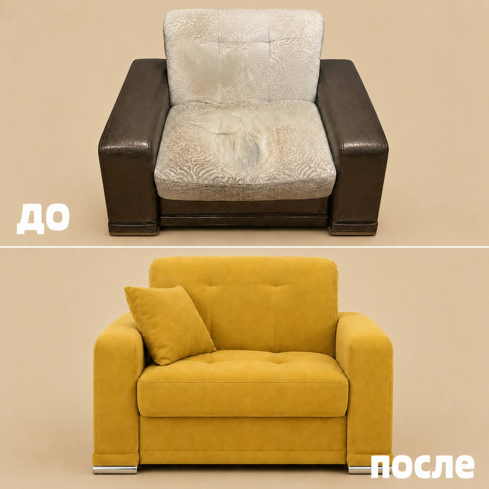
Замена поролона
Если мебель просела или стала неудобной — восстановим мягкость и форму.
от 3 000 ₽Рассчитать
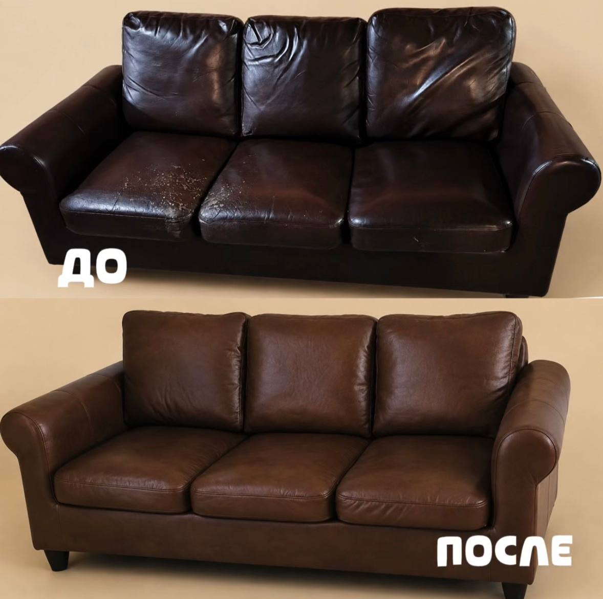
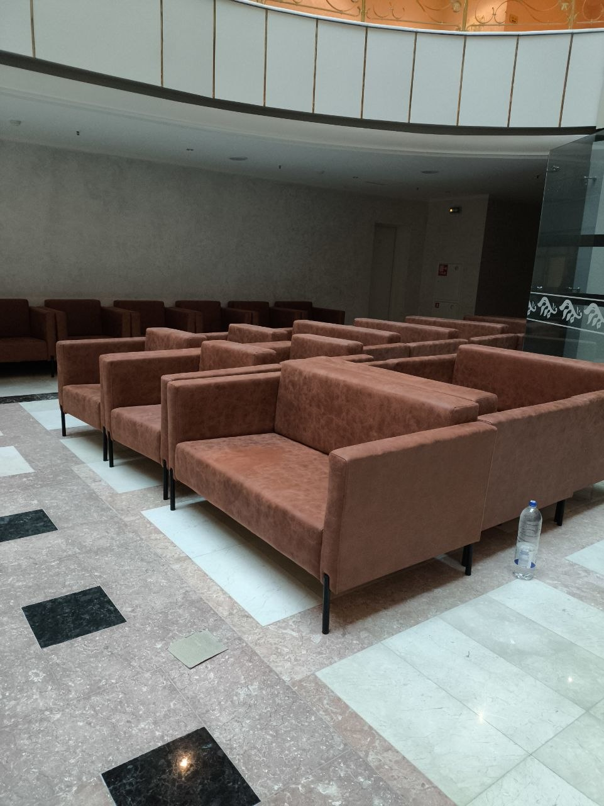
Мебель для бизнеса
Диваны, банкетки, стулья и зоны ожидания для кафе, салонов и офисов.
расчёт по фотоРассчитать
Результат виден сразу
Посмотрите, как меняется мебель после перетяжки
Старая мебель получает новый внешний вид, а вы сохраняете привычные размеры и удобную конструкцию.
Хотите узнать стоимость восстановления?Пришлите 2–3 фото мебели в удобный мессенджер.
Отправить фото мебелиБез сложных анкет и долгих расчётов
Понятный процесс: от фото до готовой мебели
Сначала оцениваем задачу, затем согласуем материал и объём работ.
Вы отправляете фото
Покажите мебель в сообщениях. Этого достаточно для предварительной оценки.
Оцениваем состояние
Подскажем, нужен ремонт, частичная замена или полная перетяжка.
Подбираем материал
Учитываем интерьер, бюджет, детей, животных и ежедневную нагрузку.
Выполняем работу
Восстанавливаем обивку, наполнитель, каркас и механизмы.
Готовая мебель
Мебель снова выглядит аккуратно и подходит под интерьер.
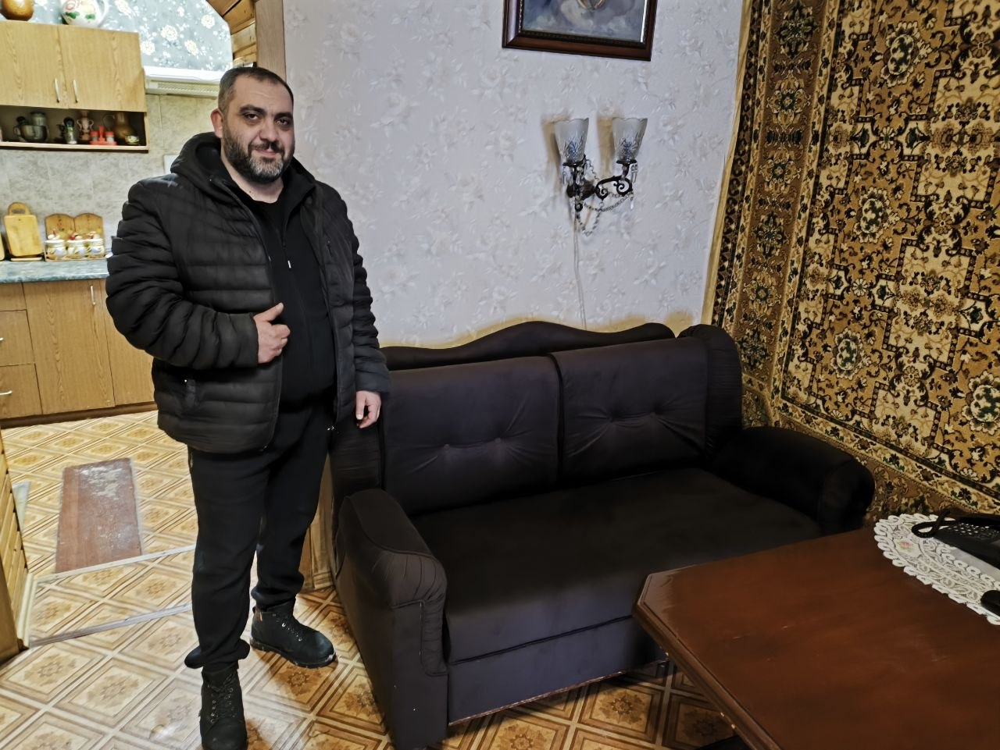
Локальный мастер в Самаре
Работа начинается с честной оценки
Если достаточно заменить только наполнитель, механизм или часть обивки, предложим этот вариант. Полная перетяжка нужна не всегда.
Позвонить мастеруКрасиво — и практично на каждый день
Подберём ткань под интерьер, детей, животных и нагрузку
Для кухни нужна ткань, которую легко чистить. Для дома с животными — устойчивые к зацепкам варианты. Для кафе и офисов — материалы под высокую проходимость.
Получить консультацию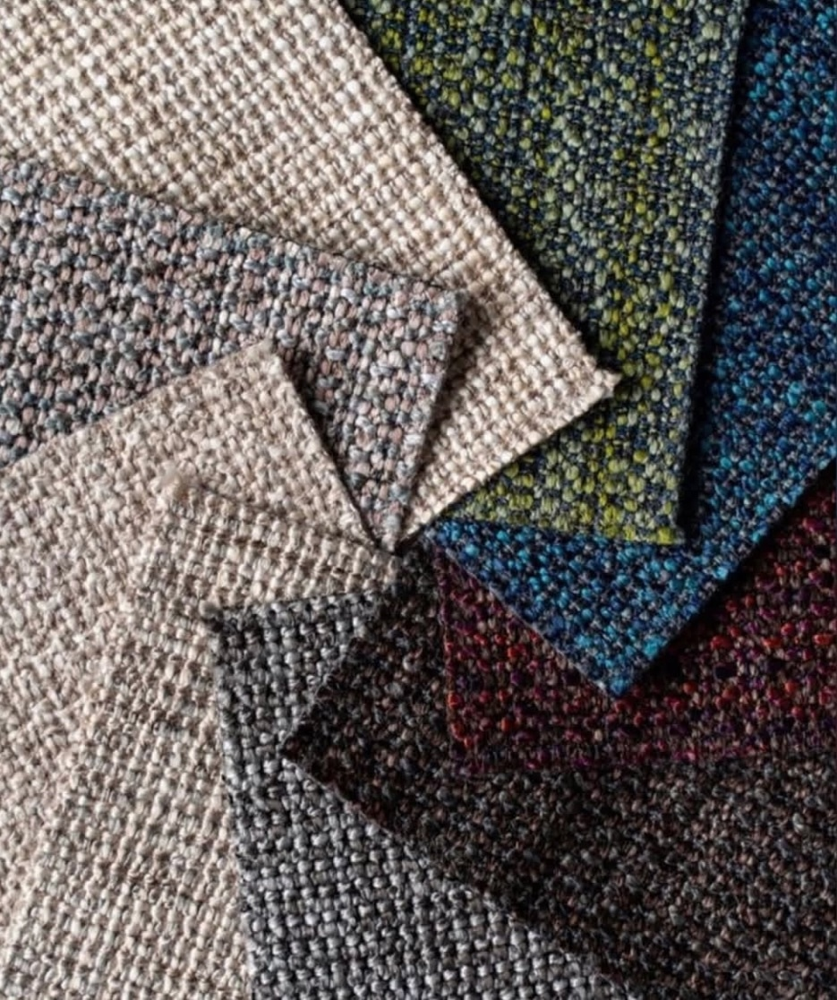
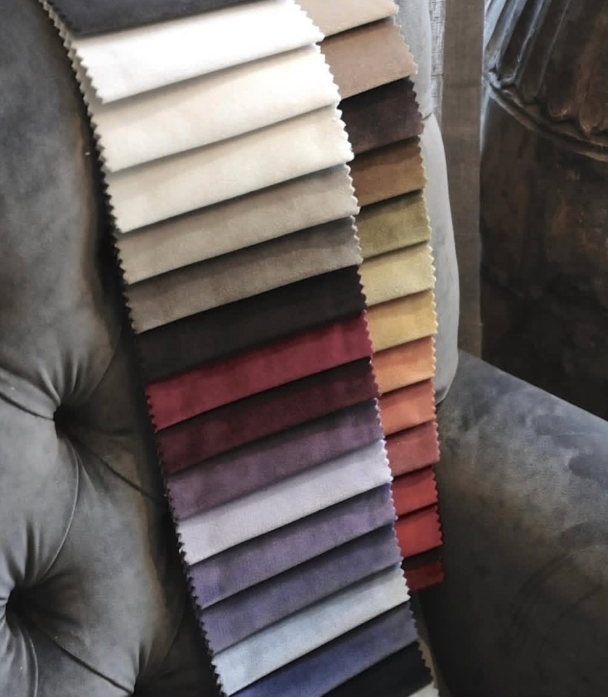
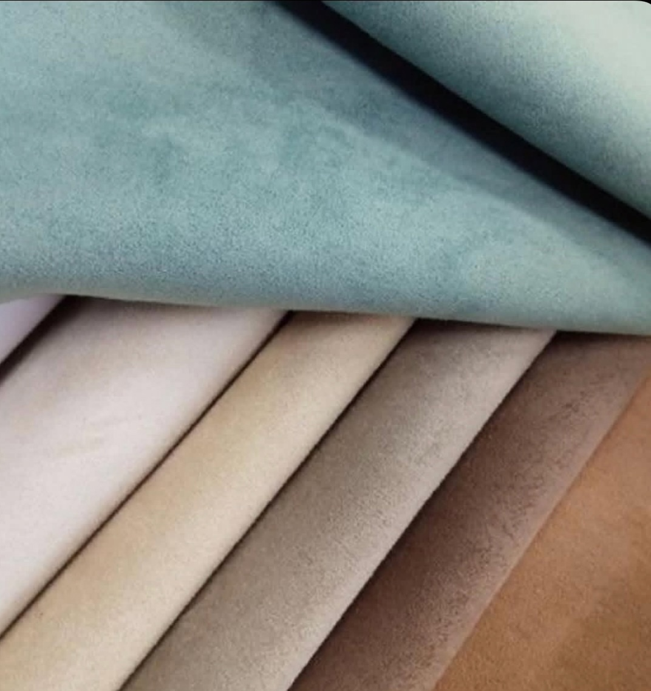
 Кафе · салоны · офисы
Кафе · салоны · офисы
Для бизнеса
Мебель в кафе, салоне или офисе портит первое впечатление?
Обновим диваны, банкетки, стулья, кресла и зоны ожидания в едином стиле. Подберём материалы, которые выдерживают ежедневную нагрузку и легко чистятся.
КафеРестораныСалоныБарбершопыОфисыГостиницыКальянныеЗоны ожидания
- Можно обновить весь зал в одном стиле
- Износостойкие материалы под высокую нагрузку
- Расчёт по фото и количеству предметов
Пришлите фото, количество предметов и желаемые сроки — подготовим предварительный расчёт.
Получить расчёт для бизнесаСначала факты, потом решение
Боитесь, что мебель испортят? Вот почему работу можно доверить нам
Обсуждаем задачу до начала работ и показываем, из чего складывается решение.
Более 10 лет опыта
Работаем с мебелью разной конструкции и сложности.
Материал под задачу
Учитываем интерьер, нагрузку и требования к уходу.
Гарантия на работу
Гарантия распространяется на выполненные мастерской работы.
Аккуратная посадка ткани
Следим за натяжением, швами, углами и формой деталей.
Оценка по фото
До вызова мастера можно понять порядок стоимости.
Есть до / после
Результат можно оценить на примерах выполненных работ.
Сравните до покупки
Не спешите покупать новый диван
Если каркас мебели целый, часто выгоднее заменить обивку, наполнитель или отдельные элементы. Вы сохраните привычный размер и сможете выбрать новый цвет.
Пришлите фото — оценим состояниеПокупка с нуля
- Нужно искать подходящий размер
- Качество не всегда понятно заранее
- Нужно ждать доставку
- Старую мебель придётся вывозить
Ремонт и перетяжка
- Сохраняется удобная конструкция
- Вы выбираете ткань и цвет
- Можно обновить под интерьер
- Иногда достаточно ремонта одной части
Без скрытого обещания точной цены
Сколько примерно стоит обновить мебель?
Точная стоимость зависит от размера, состояния, выбранного материала и объёма работ. По фото назовём предварительный диапазон.
Перетяжка стулаот 1 000 ₽
Перетяжка креслаот 4 000 ₽
Ремонт диванаот 3 000 ₽
Замена обивки диванаот 5 000 ₽
Перетяжка диванаот 8 000 ₽
Перетяжка кухонного уголкаот 7 000 ₽
Замена поролонаот 3 000 ₽
Мебель для бизнесарасчёт по фото
Чтобы назвать точнее — отправьте фото мебелиЖелательно общий план и крупно места повреждений.
Рассчитать стоимостьРасчёт по фото
Узнайте стоимость без выезда мастера
Прикрепите фото и заполните короткую форму. Заявка откроется готовым сообщением в Telegram для @sagatel_petrosyan.
- 1Сфотографируйте мебель целикомЧтобы были понятны размер и конструкция.
- 2Покажите повреждения крупноПотёртости, просадку или механизм.
- 3Укажите, что хотите изменитьТкань, цвет, мягкость или отдельную деталь.
До начала работ
Ответы на вопросы перед перетяжкой
Не нашли нужного ответа? Позвоните мастеру или отправьте фото мебели.
+7 (927) 768-07-00Можно ли рассчитать стоимость по фото?
Да, для предварительной оценки достаточно отправить фото мебели. Точная цена зависит от размера, состояния и выбранного материала.
Что выгоднее: ремонт или полная перетяжка?
Сначала оцениваем состояние. Иногда достаточно заменить поролон или часть обивки, а иногда выгоднее сделать полную перетяжку.
Какие материалы можно выбрать?
Ткань, велюр, рогожка, флок, микровелюр, экокожа, кожа и другие варианты под интерьер и нагрузку.
Работаете с мебелью для кафе и офисов?
Да, обновляем мебель для кафе, салонов, офисов, гостиниц и зон ожидания.
Есть ли гарантия?
Да, на выполненные мастерской работы предоставляется гарантия. Условия зависят от вида работ и фиксируются при согласовании заказа.
Можно перетянуть один стул или кресло?
Да, можно отремонтировать как один предмет, так и комплект мебели.
Работаете по Самаре и области?
Да, работаем по Самаре и Самарской области. Уточните адрес при обращении.
Первый расчёт — по фото
Верните мебели аккуратный вид без покупки новой
Отправьте фото дивана, кресла, стульев или кухонного уголка — подскажем варианты восстановления и рассчитаем примерную стоимость.
Ответим, подберём материал и подскажем, что выгоднее в вашем случае.